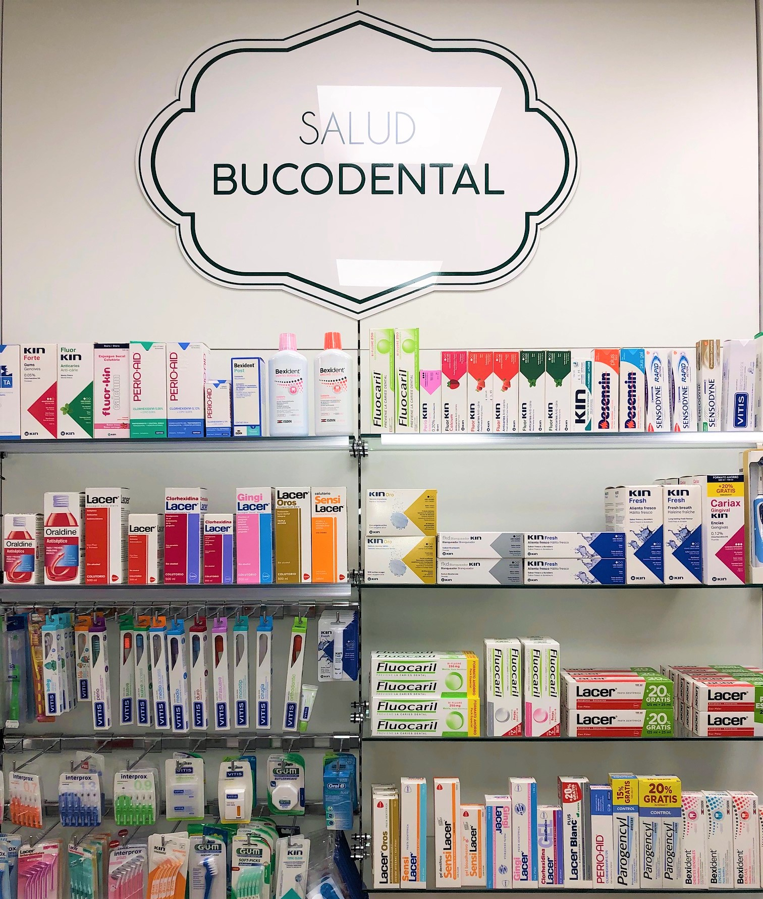

Salud Oral Integral
Salud Bucodental Avanzada
Sonrisas saludables para toda la familia
Completa gama de productos para la higiene oral diaria y tratamientos específicos. Realizamos revisiones gratuitas de higiene bucal y recomendamos el protocolo más adecuado según las necesidades de cada paciente.
- Cepillos eléctricos de última generación (Oral-B, Philips Sonicare)
- Pastas para sensibilidad dental, encías y blanqueamiento
- Colutorios terapéuticos y de mantenimiento (sin alcohol)
- Hilos dentales, irrigadores y cepillos interproximales
- Cuidado específico para ortodoncia: ceras, cepillos especiales, flúor
- Productos para sequedad bucal y aftas recurrentes